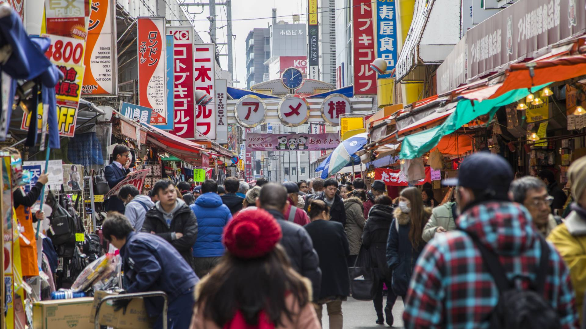
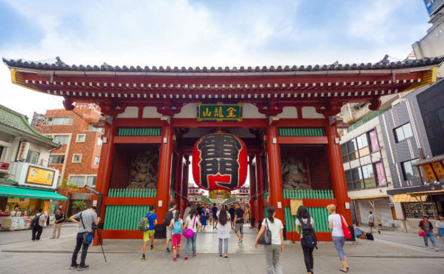
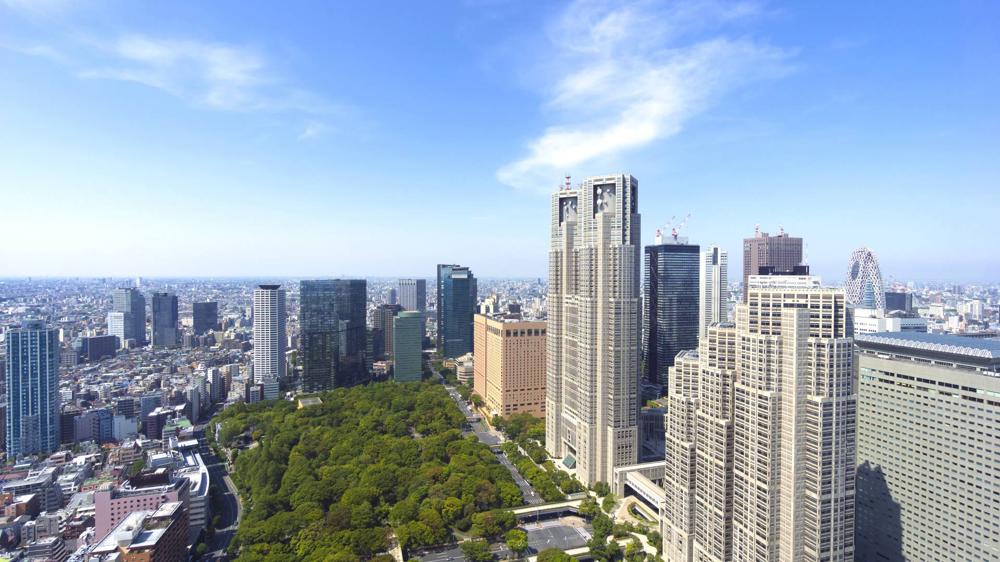

도쿄여행안내
도쿄 지역별
계절 별 및 전철노선도
봄 관광 가이드
여름 관광 가이드
가을 관광 가이드
겨울 관광 가이드
축제`행사 캘린더
전철 노선도
여행 팁
현지인들이 가는 곳
공유
TOKYO MAP
도쿄 지역별 가이드
도쿄 북부
이케부쿠로
 우에노
닛포리
도쿄 남부
오다이바
롯폰기
도쿄타워 주변

도쿄 동부
아사쿠사
도쿄 스카이트리
료고쿠
도쿄 서부
시부야
신주쿠
하라주쿠
도쿄 도심
긴자
아키하바라
도쿄역, 마루노우치
니혼바시
 롯폰기
롯폰기
 도쿄타워 주변
도쿄타워 주변
 도쿄 스카이트리
도쿄 스카이트리

 아키하바라
아키하바라
아키하바라
아키하바라